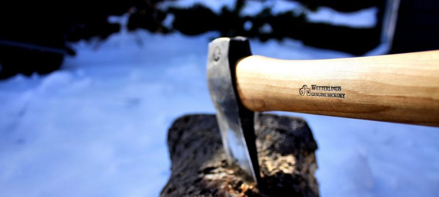
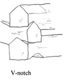
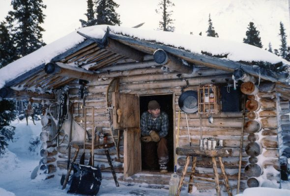

What do you need to build this log cabin?

The only tool you will need to create this log cabin is an axe.
Your axe needs to be a good sturdy one if you are going to start building a wilderness cabin, so make sure you have something for that purpose, and not just a cheap little axe that isn’t going to be able to chop good sizes of wood. If you have more time, and want to invest that time in building a more firm and homely log cabin, you can, of course, use more tools. Using other tools will even speed up the process to build a good survival cabin and allow you to create more complex, but more spacious and stronger, architectural designs.
If you do have extra resources, the tools you would need to build a log cabin are tools such as handsaws, hammers, nails, and screws and shovels. These tools are going to be useful in any constructive work, so if you have the chance to take, then do so.
What you also need is a friend, as building a log cabin or survival cabin can be very taxing on the body. You are dealing with heavy logs for most of the time, and you have to lift them a lot. If you have a friend that can help you, this quick shelter should be able to be built much quicker than other types of log cabins, as it is a quick survival cabin. After some good days of full sunlight, you should be able to have a 10×10 foot small survival cabin built in these five simple steps.
Five steps to make a log cabin
To begin with, you will need 55 logs that are about 10 foot in length, and 10 inches in diameter. Given that the average post oak is 30ft tall, you’ll be able to get roughly 3 logs from each tree you fell. So you’ll need to fell roughly 20 trees. With a sharp axe, and following the correct procedure of making two cuts just about knee height in the front to form a wedge shape, and one slightly higher in the back.
Once felled you will need to prepare the logs. With a sharp axe held on its side, run it down the logs and remove all branches and cut the log into 12ft lengths.
Choose a site that is close to water, has plenty of natural shelter and is not near any dead standing trees. You are obviously going to want to stay away from any slopes or small hills, as this will just create an uneven working space and will require you to create a level foundation which is just more work.
To prepare your site, clear away all the debris and level as much as you can. If you want to make sure your survival cabin is long lasting, you might want to think about some form of foundation, but for the purpose of building a quick survival cabin you’ll skip that.
You can expect to spend around one hour on your site preparation.

Choose the four straightest and longest logs you have. These are to be used to create a square shape which will form the base of your survival shelter. To connect the base logs, use your axe to make a ‘notch’ on the underside at either end of two of the logs, then slot these on top of your other two base logs. The notch should be a basic v-notch (image on the right).
To raise the rest of the walls is simple; continue notching the logs and stacking them until you have the height you need. Once you’re finished you’ll have a cuboid shape, and you are ready to add a pitched roof.
Keeping the openings at a minimum is important, especially for the type of cabin we are designing here. The reason why they are good to keep at a minimum is that if you are only making a doorway, having a more limited opening will reduce the amount of airflow and draft that runs through the cabin. If you have an internal fireplace (a bit more advanced as it needs to be enclosed for safety reasons) you want to keep the cabin as warm as possible.
To make your opening, when you have reached the height of your door, cut downwards through one log at a time. If you are not making a door to block your opening, you will need to create only a space that is large enough to crawl through. That way you are able to keep that draft to a minimum.
Laying the roof is the most challenging part of making any type of log cabin. Making a survival cabin is no different, it is tricky. The aim is to create two opposite gable walls. A gable wall is basically the end of the wall with a triangle on top of it.
To make this, you need to keep stacking logs that get shorter in length to create a triangular shape. When you are half way up, take two more of your best logs and notch them (remember that v-notch? You will be getting good at it now) to connect both the gable walls, one on each side of the triangular shape you are creating. Continue stacking the logs until you reach the peak, and finish the main log work off by connecting the two gable walls with one ridge log.
You can use smaller logs to create a roof rafter, which you can cover with any natural materials such as leaves, branches, and mulch to finish the roof.
The Finished Cabin

Richard Louis “Dick” Proenneke and his amazing log cabin that took much longer to build. It would take some experience to get to this level of cabin building. Image: NPS.
So there it is, a quick log cabin. It definitely is no Dick Proenneke cabin (pictured above) which is a heritage masterpiece, but it will definitely serve its purpose in keeping you warm and providing a strong, sturdy, shelter. Wood is one of the most readily available natural resources you will ever find and is an ever growing free resource in the wilderness that we can all use as a means to create a log cabin.